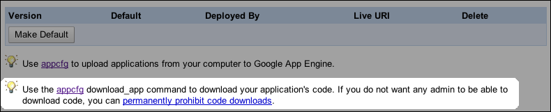

Uploading, Downloading, and Managing a Go App
The App Engine Go SDK includes a command for interacting with App Engine named appcfg.py. You can use this command to upload new versions of the code, configuration and static files for your app to App Engine. You can also use the command to manage datastore indexes and download log data.
Uploading the App
To upload application files, run the appcfg.py command with the update action and the name of your application's root directory. The root directory should contain the app.yaml file for the application.
appcfg.py update myapp/
appcfg.py gets the application ID from the app.yaml file, and prompts you for the email address and password of your Google account. After successfully signing in with your account, appcfg.py stores a "cookie" so that it does not need to prompt for a password on subsequent attempts.
You can specify the email address on the command line using the --email option. You cannot specify the password as a command line option.
appcfg.py --email=Albert.Johnson@example.com update myapp/
Only application owners and the developer who uploaded the code can download it. If anyone else attempts to download the app, they'll see an error message like the following:
Fetching file list...
Email: user@example.com
Password for user@example.com:
Error 403: --- begin server output ---
You do not have permission to download this app version.
--- end server output ---
Updating Indexes
When you upload an application using appcfg.py update, the update includes the app's index.yaml file. If the index.yaml file defines an index that doesn't exist yet on App Engine, App Engine creates the new index. Depending on how much data is already in the datastore that needs to be mentioned in the new index, the process of creating the index may take a while. If the app performs a query that requires an index that hasn't finished building yet, the query will raise an exception.
To prevent this, you must ensure that the new version of the app that requires a new index is not the live version of the application until the indexes finish building. One way to do this is to give the app a new version number in app.yaml whenever you add or change an index in index.yaml. The app is uploaded as a new version, and does not become the default version automatically. When your indexes have finished building, you change the default version to the new one using the "Versions" section of the Admin Console.
Another way to ensure that new indexes are built before the new app goes live is to upload the index.yaml configuration separately before uploading the app. To upload only the index configuration for an app, use the following command:
appcfg.py update_indexes myapp/
You can check the status of the app's indexes from the "Indexes" section of the Admin Console.
Deleting Unused Indexes
When you change or remove an index from index.yaml, the original index is not deleted from App Engine automatically. This gives you the opportunity to leave an older version of the app running while new indexes are being built, or to revert to the older version immediately if a problem is discovered with a newer version.
When you are sure that old indexes are no longer needed, you can delete them from App Engine using the following command:
appcfg.py vacuum_indexes myapp/
This command deletes all indexes for the app that are not mentioned in the local version of index.yaml.
Updating Task Queue Configuration
You can update just the configuration for an app's task queues without uploading the full application. To upload the queue.yaml file, use the appcfg.py update_queues command:
appcfg.py update_queues myapp/
Updating the DoS Protection Configuration
You can update just the configuration for the DoS Protection for an app without uploading the full application. To upload the dos.yaml file, use the appcfg.py update_dos command:
appcfg.py update_dos myapp/
Managing Scheduled Tasks
App Engine supports scheduled tasks (known as cron jobs). You specify these in a file called cron.yaml, and upload them using the appcfg.py update_cron command:
appcfg.py update_cron myapp/
appcfg update will also upload cron job specifications if the file exists. For more on cron jobs, see the Cron Jobs documentation.
appcfg cron_info displays a summary of the scheduled task configuration, and the expected times of the next few runs.
Downloading Source Code
You can download an application's source code by running appcfg.py with the download_app action in the Python SDK command-line tool:
appcfg.py download_app -A <your_app_id> -V <your_app_version> <output-dir>
Output like the following results if the command is successful:
Getting file list...
Email: <admin-id>@example.com
Password for <admin-id>@example.com:
Fetching files...
Getting files...
[1/5] request.py
[2/5] login.py
[3/5] static/screen.css
[4/5] static/print.css
[5/5] images/bird.png
Only the developer who uploaded the code can download it. If anyone other than that developer attempts to download the app, they'll see an error message like the following:
Fetching file list...
Email: user@example.com
Password for user@example.com:
Error 403: --- begin server output ---
You do not have permission to download this app version.
--- end server output ---
You can permanently disable code downloads from the Versions screen in your development web server. On that page, click permanently prohibit code downloads:

Warning! This action is irreversible. After you prohibit code download, there is no way to re-enable this feature.
Downloading Logs
App Engine maintains a log of messages that your application emits using the logging module from the Python standard library, as well as other messages printed to the standard error stream. App Engine also records each request in the log. Each log level has a fixed buffer size that controls the amount of log information you can access. Normally, you use logging features more at lower log levels; thus, the time window is smaller for log events at these levels. You can browse your app's logs of the last 90 days from the "Logs" section of the Admin Console.
If you wish to perform more detailed analysis of your application's logs, you can download the log data to a file on your computer. To download logs to a file named mylogs.txt, use the following command:
appcfg.py request_logs myapp/ mylogs.txt
By default, the command downloads log messages from the current calendar day (since midnight Pacific Time) with a log level of INFO or higher (omitting DEBUG level messages). The command overwrites the local log file. You can adjust the number of days, the minimum log level, and whether to overwrite or append to the local log file using command-line options. See below for more information on these options.
You can limit the log messages that are downloaded to just those emitted during request on a given domain name using the --vhost=... option. You can use this to download the logs for your live app using a Google Apps domain or http://your_app_id.appspot.com, excluding log messages emitted by versions you are testing on URLs such as http://2.latest.your_app_id.appspot.com. Or you can use it to download just the log messages for a given test domain.
Uploading Data
You can upload large amounts data to your application's data store using appcfg.py with the upload_data action. This action requires that you set up a special request handler in your Python application. For complete instructions on how to use this feature, see Uploading Data.
Using an HTTP Proxy
If you are running appcfg.py behind an HTTP proxy, you must tell appcfg.py the name of the proxy. To set an HTTP proxy for appcfg.py, set the http_proxy and https_proxy environment variables.
Using Windows (in Command Prompt):
set HTTP_PROXY=http://cache.mycompany.com:3128
set HTTPS_PROXY=http://cache.mycompany.com:3128
appcfg.py update myapp
Using the command line in Mac OS X (in Terminal) or Linux:
export http_proxy="http://cache.mycompany.com:3128"
appcfg.py update myapp
By default, appcfg.py uses HTTPS to communicate with App Engine. If you require that it use HTTP instead, you can turn off HTTPS with the --insecure option:
appcfg.py --insecure update myapp
Command-Line Arguments
The appcfg.py command takes a set of options, an action, and arguments for the action.
The following actions are available:
appcfg.py [options] cron_info <app-directory>-
Displays information about the scheduled task (cron) configuration, including the expected times of the next few executions. By default, displays the times of the next 5 runs. You can modify the number of future run times displayed with the --num_runs=... option.
appcfg.py help <action>-
Prints a help message about the given action, then quits.
appcfg.py download_app -A <app_id> -V <version><output-dir>-
Retrieves the most current version of your application's code using the following options:
-AThe application ID (required).
-VThe current application version. May be one of the following:
-V major.minor – Specifies the exact version specified.-V major – Specifies the latest major version.- Omitted entirely – Returns the current default version, if one exists
<output-dir>The directory where you wish to save the files (required).
appcfg.py [options] request_logs <app-directory> <output-file>
Retrieves log data for the application running on App Engine. output-file is the name of the file to create, replace or append (if the --append flag is set). If output-file is a hyphen (-), the log data is printed to the console. The following options apply to request_logs:
--num_days=...-
The number of days of log data to retrieve, ending on the current date at midnight UTC. A value of 0 retrieves all available logs. If --append is given, then the default is 0, otherwise the default is 1.
--end_date=...-
The latest date of log data to return, in the form YYYY-MM-DD. The default is today. The --num_days option counts backwards from the end date.
--severity=...-
The minimum log level for the log messages to retrieve. The value is a number corresponding to the log level: 4 for CRITICAL, 3 for ERROR, 2 for WARNING, 1 for INFO, 0 for DEBUG. All messages at the given log level and above will be retrieved. Default is 1 (INFO).
--append-
Append the fetched data to the output file, starting with the first log line not already present in the file. Running this command once a day with --append results in a file containing all log data.
The default is to overwrite the output file. Does not apply if output-file is - (printing to the console).
--vhost=...-
If present, limits the log messages downloaded to just those emitted by requests for a given domain name. For instance, --vhost=example.com will download just the log messages for the live app at the Google Apps domain example.com, excluding any log messages emitted by a new version being tested at http://2.latest.your_app_id.appspot.com. Similarly, --vhost=2.latest.your_app_id.appspot.com downloads just the logs for the test version, excluding the live version.
The value is a regular expression that matches the Host header of the incoming requests. Note that the pattern is case sensitive, even though domain names usually are not.
--include_vhost-
Include the domain name for each request (the Host request header) in the request log data, as an additional field.
appcfg.py [options] rollback <app-directory>
Undoes a partially completed update for the given application. You can use this if an update was interrupted, and the command is reporting that the application cannot be updated due to a lock.
appcfg.py [options] set_default_version <app-directory>
Sets the default (serving) version of the app. By default, the serving version is set to the version specified in app.yaml, unless you specify another with the --version option.
appcfg.py [options] update <app-directory>
Uploads files for an application given the application's root directory. The application ID and version are taken from the app.yaml file in the app directory. The following option applies to update:
--max_size-
Maximum size of a file to upload (in bytes).
appcfg.py [options] update_cron <app-directory>
Updates the schedule task (cron) configuration for the app, based on the cron.yaml file.
appcfg.py [options] update_dos <app-directory>
Updates the DoS Protection configuration for the app, based on the dos.yaml file.
appcfg.py [options] update_indexes <app-directory>
Updates datastore indexes in App Engine to include newly added indexes. If a new version of your application requires an additional index definition that was added to index.yaml, you can update your index definitions in App Engine prior to uploading the new version of your application. Running this action a few hours prior to uploading your new application version will give the indexes time to build and be serving when the application is deployed.
appcfg.py [options] update_queues <app-directory>
Updates the task queue configuration for the app, based on the queue.yaml file.
appcfg.py [options] upload_data <app-directory>
Uploads data to the datastore from CSV files. For complete information on using this feature, see Uploading Data.
appcfg.py [options] vacuum_indexes <app-directory>
Deletes unused datastore indexes in App Engine. If an index definition is removed from index.yaml, the index is not deleted automatically when the application is uploaded because it may be in use by another version of the application. Run this action when all old indexes are no longer needed.
The appcfg.py command accepts the following options for all actions:
--application=...-
The application ID to use. By default, this is derived from the application: line in the app.yaml file in the application directory. If --application is specified, it overrides the ID in app.yaml for this action.
--email=...-
The email address of the Google account of an administrator for the application, for actions that require signing in. If omitted and no cookie is stored from a previous use of the command, the command will prompt for this value.
--force-
Force deletion of unused indexes. By default, uploading an app does not delete unused indexes from the server, even if they do not appear in the index.yaml file.
--host=...-
The hostname of the local machine for use with remote procedure calls.
--insecure-
Use HTTP instead of HTTPS to communicate with App Engine.
--max_size=...-
A maximum size of files to upload, as a number of bytes. Files larger than this size will not be uploaded. The default is 10485760. The server currently enforces a maximum file size of 10,485,760 bytes, so increasing this value will not have any effect.
--no_cookies-
Do not store the administrator sign-in credentials as a cookie; prompt for a password every time.
--noisy-
Print many messages about what the command is doing. This is mostly useful when working with the App Engine team to troubleshoot an upload issue.
--passin-
If given, the tool accepts the Google account password in stdin instead of prompting for it interactively. This allows you to invoke the tool from a script without putting your password on the command line.
--quiet-
Do not print messages when successful.
--server=...-
The App Engine server hostname. The default is appengine.google.com.
--verbose-
Print messages about what the command is doing.
--version=...-
The version ID to use. By default, this is derived from the the version: line in the app.yaml file in the application directory. If --version is specified, it overrides the version ID in app.yaml for this action.